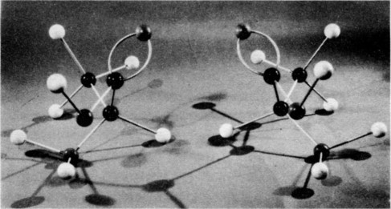

52. Symmetry in Physical Laws
52–1 Symmetry operations#
The subject of this chapter is what we may call symmetry in physical laws. We have already discussed certain features of symmetry in physical laws in connection with vector analysis (Chapter 11), the theory of relativity (Chapter 16), and rotation (Chapter 20).
Why should we be concerned with symmetry? In the first place, symmetry is fascinating to the human mind, and everyone likes objects or patterns that are in some way symmetrical. It is an interesting fact that nature often exhibits certain kinds of symmetry in the objects we find in the world around us. Perhaps the most symmetrical object imaginable is a sphere, and nature is full of spheres—stars, planets, water droplets in clouds. The crystals found in rocks exhibit many different kinds of symmetry, the study of which tells us some important things about the structure of solids. Even the animal and vegetable worlds show some degree of symmetry, although the symmetry of a flower or of a bee is not as perfect or as fundamental as is that of a crystal.
But our main concern here is not with the fact that the objects of nature are often symmetrical. Rather, we wish to examine some of the even more remarkable symmetries of the universe—the symmetries that exist in the basic laws themselves which govern the operation of the physical world.
First, what is symmetry? How can a physical law be “symmetrical”? The problem of defining symmetry is an interesting one and we have already noted that Weyl gave a good definition, the substance of which is that a thing is symmetrical if there is something we can do to it so that after we have done it, it looks the same as it did before. For example, a symmetrical vase is of such a kind that if we reflect or turn it, it will look the same as it did before. The question we wish to consider here is what we can do to physical phenomena, or to a physical situation in an experiment, and yet leave the result the same. A list of the known operations under which various physical phenomena remain invariant is shown in Table 52–1.
| Translation in space |
| Translation in time |
| Rotation through a fixed angle |
| Uniform velocity in a straight line (Lorentz transformation) |
| Reversal of time |
| Reflection of space |
| Interchange of identical atoms or identical particles |
| Quantum-mechanical phase |
| Matter-antimatter (charge conjugation) |
52–2 Symmetry in space and time#
The first thing we might try to do, for example, is to translate the phenomenon in space. If we do an experiment in a certain region, and then build another apparatus at another place in space (or move the original one over) then, whatever went on in one apparatus, in a certain order in time, will occur in the same way if we have arranged the same condition, with all due attention to the restrictions that we mentioned before: that all of those features of the environment which make it not behave the same way have also been moved over—we talked about how to define how much we should include in those circumstances, and we shall not go into those details again.
In the same way, we also believe today that displacement in time will have no effect on physical laws. (That is, as far as we know today —all of these things are as far as we know today!) That means that if we build a certain apparatus and start it at a certain time, say on Thursday at 10:00 a.m., and then build the same apparatus and start it, say, three days later in the same condition, the two apparatuses will go through the same motions in exactly the same way as a function of time no matter what the starting time, provided again, of course, that the relevant features of the environment are also modified appropriately in time. That symmetry means, of course, that if one bought General Motors stock three months ago, the same thing would happen to it if he bought it now!
We have to watch out for geographical differences too, for there are, of course, variations in the characteristics of the earth’s surface. So, for example, if we measure the magnetic field in a certain region and move the apparatus to some other region, it may not work in precisely the same way because the magnetic field is different, but we say that is because the magnetic field is associated with the earth. We can imagine that if we move the whole earth and the equipment, it would make no difference in the operation of the apparatus.
Another thing that we discussed in considerable detail was rotation in space: if we turn an apparatus at an angle it works just as well, provided we turn everything else that is relevant along with it. In fact, we discussed the problem of symmetry under rotation in space in some detail in Chapter 11, and we invented a mathematical system called vector analysis to handle it as neatly as possible.
On a more advanced level we had another symmetry—the symmetry under uniform velocity in a straight line. That is to say—a rather remarkable effect—that if we have a piece of apparatus working a certain way and then take the same apparatus and put it in a car, and move the whole car, plus all the relevant surroundings, at a uniform velocity in a straight line, then so far as the phenomena inside the car are concerned there is no difference: all the laws of physics appear the same. We even know how to express this more technically, and that is that the mathematical equations of the physical laws must be unchanged under a Lorentz transformation. As a matter of fact, it was a study of the relativity problem that concentrated physicists’ attention most sharply on symmetry in physical laws.
Now the above-mentioned symmetries have all been of a geometrical nature, time and space being more or less the same, but there are other symmetries of a different kind. For example, there is a symmetry which describes the fact that we can replace one atom by another of the same kind; to put it differently, there are atoms of the same kind. It is possible to find groups of atoms such that if we change a pair around, it makes no difference—the atoms are identical. Whatever one atom of oxygen of a certain type will do, another atom of oxygen of that type will do. One may say, “That is ridiculous, that is the definition of equal types!” That may be merely the definition, but then we still do not know whether there are any “atoms of the same type”; the fact is that there are many, many atoms of the same type. Thus it does mean something to say that it makes no difference if we replace one atom by another of the same type. The so-called elementary particles of which the atoms are made are also identical particles in the above sense—all electrons are the same; all protons are the same; all positive pions are the same; and so on.
After such a long list of things that can be done without changing the phenomena, one might think we could do practically anything; so let us give some examples to the contrary, just to see the difference. Suppose that we ask: “Are the physical laws symmetrical under a change of scale?” Suppose we build a certain piece of apparatus, and then build another apparatus five times bigger in every part, will it work exactly the same way? The answer is, in this case, no! The wavelength of light emitted, for example, by the atoms inside one box of sodium atoms and the wavelength of light emitted by a gas of sodium atoms five times in volume is not five times longer, but is in fact exactly the same as the other. So the ratio of the wavelength to the size of the emitter will change.
Another example: we see in the newspaper, every once in a while pictures of a great cathedral made with little matchsticks—a tremendous work of art by some retired fellow who keeps gluing matchsticks together. It is much more elaborate and wonderful than any real cathedral. If we imagine that this wooden cathedral were actually built on the scale of a real cathedral, we see where the trouble is; it would not last—the whole thing would collapse because of the fact that scaled-up matchsticks are just not strong enough. “Yes,” one might say, “but we also know that when there is an influence from the outside, it also must be changed in proportion!” We are talking about the ability of the object to withstand gravitation. So what we should do is first to take the model cathedral of real matchsticks and the real earth, and then we know it is stable. Then we should take the larger cathedral and take a bigger earth. But then it is even worse, because the gravitation is increased still more!
Today, of course, we understand the fact that phenomena depend on the scale on the grounds that matter is atomic in nature, and certainly if we built an apparatus that was so small there were only five atoms in it, it would clearly be something we could not scale up and down arbitrarily. The scale of an individual atom is not at all arbitrary—it is quite definite.
The fact that the laws of physics are not unchanged under a change of scale was discovered by Galileo. He realized that the strengths of materials were not in exactly the right proportion to their sizes, and he illustrated this property that we were just discussing, about the cathedral of matchsticks, by drawing two bones, the bone of one dog, in the right proportion for holding up his weight, and the imaginary bone of a “super dog” that would be, say, ten or a hundred times bigger—that bone was a big, solid thing with quite different proportions. We do not know whether he ever carried the argument quite to the conclusion that the laws of nature must have a definite scale, but he was so impressed with this discovery that he considered it to be as important as the discovery of the laws of motion, because he published them both in the same volume, called “On Two New Sciences.”
Another example in which the laws are not symmetrical, that we know quite well, is this: a system in rotation at a uniform angular velocity does not give the same apparent laws as one that is not rotating. If we make an experiment and then put everything in a space ship and have the space ship spinning in empty space, all alone at a constant angular velocity, the apparatus will not work the same way because, as we know, things inside the equipment will be thrown to the outside, and so on, by the centrifugal or Coriolis forces, etc. In fact, we can tell that the earth is rotating by using a so-called Foucault pendulum, without looking outside.
Next we mention a very interesting symmetry which is obviously false, i.e., reversibility in time. The physical laws apparently cannot be reversible in time, because, as we know, all obvious phenomena are irreversible on a large scale: “The moving finger writes, and having writ, moves on.” So far as we can tell, this irreversibility is due to the very large number of particles involved, and if we could see the individual molecules, we would not be able to discern whether the machinery was working forward or backwards. To make it more precise: we build a small apparatus in which we know what all the atoms are doing, in which we can watch them jiggling. Now we build another apparatus like it, but which starts its motion in the final condition of the other one, with all the velocities precisely reversed. It will then go through the same motions, but exactly in reverse. Putting it another way: if we take a motion picture, with sufficient detail, of all the inner works of a piece of material and shine it on a screen and run it backwards, no physicist will be able to say, “That is against the laws of physics, that is doing something wrong!” If we do not see all the details, of course, the situation will be perfectly clear. If we see the egg splattering on the sidewalk and the shell cracking open, and so on, then we will surely say, “That is irreversible, because if we run the moving picture backwards the egg will all collect together and the shell will go back together, and that is obviously ridiculous!” But if we look at the individual atoms themselves, the laws look completely reversible. This is, of course, a much harder discovery to have made, but apparently it is true that the fundamental physical laws, on a microscopic and fundamental level, are completely reversible in time!
52–3 Symmetry and conservation laws#
The symmetries of the physical laws are very interesting at this level, but they turn out, in the end, to be even more interesting and exciting when we come to quantum mechanics. For a reason which we cannot make clear at the level of the present discussion—a fact that most physicists still find somewhat staggering, a most profound and beautiful thing, is that, in quantum mechanics, for each of the rules of symmetry there is a corresponding conservation law; there is a definite connection between the laws of conservation and the symmetries of physical laws. We can only state this at present, without any attempt at explanation.
The fact, for example, that the laws are symmetrical for translation in space when we add the principles of quantum mechanics, turns out to mean that momentum is conserved.
That the laws are symmetrical under translation in time means, in quantum mechanics, that energy is conserved.
Invariance under rotation through a fixed angle in space corresponds to the conservation of angular momentum. These connections are very interesting and beautiful things, among the most beautiful and profound things in physics.
Incidentally, there are a number of symmetries which appear in quantum mechanics which have no classical analog, which have no method of description in classical physics. One of these is as follows: If \psi is the amplitude for some process or other, we know that the absolute square of \psi is the probability that the process will occur. Now if someone else were to make his calculations, not with this \psi, but with a \psi' which differs merely by a change in phase (let \Delta be some constant, and multiply e^{i\Delta} times the old \psi), the absolute square of \psi', which is the probability of the event, is then equal to the absolute square of \psi:
Therefore the physical laws are unchanged if the phase of the wave function is shifted by an arbitrary constant. That is another symmetry. Physical laws must be of such a nature that a shift in the quantum-mechanical phase makes no difference. As we have just mentioned, in quantum mechanics there is a conservation law for every symmetry. The conservation law which is connected with the quantum-mechanical phase seems to be the conservation of electrical charge. This is altogether a very interesting business!
52–4 Mirror reflections#
Now the next question, which is going to concern us for most of the rest of this chapter, is the question of symmetry under reflection in space. The problem is this: Are the physical laws symmetrical under reflection? We may put it this way: Suppose we build a piece of equipment, let us say a clock, with lots of wheels and hands and numbers; it ticks, it works, and it has things wound up inside. We look at the clock in the mirror. How it looks in the mirror is not the question. But let us actually build another clock which is exactly the same as the first clock looks in the mirror—every time there is a screw with a right-hand thread in one, we use a screw with a left-hand thread in the corresponding place of the other; where one is marked “ 2 ” on the face, we mark a “ ” on the face of the other; each coiled spring is twisted one way in one clock and the other way in the mirror-image clock; when we are all finished, we have two clocks, both physical, which bear to each other the relation of an object and its mirror image, although they are both actual, material objects, we emphasize. Now the question is: If the two clocks are started in the same condition, the springs wound to corresponding tightnesses, will the two clocks tick and go around, forever after, as exact mirror images? (This is a physical question, not a philosophical question.) Our intuition about the laws of physics would suggest that they would.
We would suspect that, at least in the case of these clocks, reflection in space is one of the symmetries of physical laws, that if we change everything from “right” to “left” and leave it otherwise the same, we cannot tell the difference. Let us, then, suppose for a moment that this is true. If it is true, then it would be impossible to distinguish “right” and “left” by any physical phenomenon, just as it is, for example, impossible to define a particular absolute velocity by a physical phenomenon. So it should be impossible, by any physical phenomenon, to define absolutely what we mean by “right” as opposed to “left,” because the physical laws should be symmetrical.
Of course, the world does not have to be symmetrical. For example, using what we may call “geography,” surely “right” can be defined. For instance, we stand in New Orleans and look at Chicago, and Florida is to our right (when our feet are on the ground!). So we can define “right” and “left” by geography. Of course, the actual situation in any system does not have to have the symmetry that we are talking about; it is a question of whether the laws are symmetrical—in other words, whether it is against the physical laws to have a sphere like the earth with “left-handed dirt” on it and a person like ourselves standing looking at a city like Chicago from a place like New Orleans, but with everything the other way around, so Florida is on the other side. It clearly seems not impossible, not against the physical laws, to have everything changed left for right.
Another point is that our definition of “right” should not depend on history. An easy way to distinguish right from left is to go to a machine shop and pick up a screw at random. The odds are it has a right-hand thread—not necessarily, but it is much more likely to have a right-hand thread than a left-hand one. This is a question of history or convention, or the way things happen to be, and is again not a question of fundamental laws. As we can well appreciate, everyone could have started out making left-handed screws!
So we must try to find some phenomenon in which “right hand” is involved fundamentally. The next possibility we discuss is the fact that polarized light rotates its plane of polarization as it goes through, say, sugar water. As we saw in Chapter 33, it rotates, let us say, to the right in a certain sugar solution. That is a way of defining “right-hand,” because we may dissolve some sugar in the water and then the polarization goes to the right. But sugar has come from living things, and if we try to make the sugar artificially, then we discover that it does not rotate the plane of polarization! But if we then take that same sugar which is made artificially and which does not rotate the plane of polarization, and put bacteria in it (they eat some of the sugar) and then filter out the bacteria, we find that we still have sugar left (almost half as much as we had before), and this time it does rotate the plane of polarization, but the other way! It seems very confusing, but is easily explained.

Take another example: One of the substances which is common to all living creatures and that is fundamental to life is protein. Proteins consist of chains of amino acids. Figure 52–1 shows a model of an amino acid that comes out of a protein. This amino acid is called alanine, and the molecular arrangement would look like that in Fig. 52–1 (a) if it came out of a protein of a real living thing. On the other hand, if we try to make alanine from carbon dioxide, ethane, and ammonia (and we can make it, it is not a complicated molecule), we discover that we are making equal amounts of this molecule and the one shown in Fig. 52–1 (b)! The first molecule, the one that comes from the living thing, is called L-alanine. The other one, which is the same chemically, in that it has the same kinds of atoms and the same connections of the atoms, is a “right-hand” molecule, compared with the “left-hand” L-alanine, and it is called D-alanine. The interesting thing is that when we make alanine at home in a laboratory from simple gases, we get an equal mixture of both kinds. However, the only thing that life uses is L-alanine. (This is not exactly true. Here and there in living creatures there is a special use for D-alanine, but it is very rare. All proteins use L-alanine exclusively.) Now if we make both kinds, and we feed the mixture to some animal which likes to “eat,” or use up, alanine, it cannot use D-alanine, so it only uses the L-alanine; that is what happened to our sugar—after the bacteria eat the sugar that works well for them, only the “wrong” kind is left! (Left-handed sugar tastes sweet, but not the same as right-handed sugar.)
So it looks as though the phenomena of life permit a distinction between “right” and “left,” or chemistry permits a distinction, because the two molecules are chemically different. But no, it does not! So far as physical measurements can be made, such as of energy, the rates of chemical reactions, and so on, the two kinds work exactly the same way if we make everything else in a mirror image too. One molecule will rotate light to the right, and the other will rotate it to the left in precisely the same amount, through the same amount of fluid. Thus, so far as physics is concerned, these two amino acids are equally satisfactory. So far as we understand things today, the fundamentals of the Schrödinger equation have it that the two molecules should behave in exactly corresponding ways, so that one is to the right as the other is to the left. Nevertheless, in life it is all one way!
It is presumed that the reason for this is the following. Let us suppose, for example, that life is somehow at one moment in a certain condition in which all the proteins in some creatures have left-handed amino acids, and all the enzymes are lopsided—every substance in the living creature is lopsided—it is not symmetrical. So when the digestive enzymes try to change the chemicals in the food from one kind to another, one kind of chemical “fits” into the enzyme, but the other kind does not (like Cinderella and the slipper, except that it is a “left foot” that we are testing). So far as we know, in principle, we could build a frog, for example, in which every molecule is reversed, everything is like the “left-hand” mirror image of a real frog; we have a left-hand frog. This left-hand frog would go on all right for a while, but he would find nothing to eat, because if he swallows a fly, his enzymes are not built to digest it. The fly has the wrong “kind” of amino acids (unless we give him a left-hand fly). So as far as we know, the chemical and life processes would continue in the same manner if everything were reversed.
If life is entirely a physical and chemical phenomenon, then we can understand that the proteins are all made in the same corkscrew only from the idea that at the very beginning some living molecules, by accident, got started and a few won. Somewhere, once, one organic molecule was lopsided in a certain way, and from this particular thing the “right” happened to evolve in our particular geography; a particular historical accident was one-sided, and ever since then the lopsidedness has propagated itself. Once having arrived at the state that it is in now, of course, it will always continue—all the enzymes digest the right things, manufacture the right things: when the carbon dioxide and the water vapor, and so on, go in the plant leaves, the enzymes that make the sugars make them lopsided because the enzymes are lopsided. If any new kind of virus or living thing were to originate at a later time, it would survive only if it could “eat” the kind of living matter already present. Thus it, too, must be of the same kind.
There is no conservation of the number of right-handed molecules. Once started, we could keep increasing the number of right-handed molecules. So the presumption is, then, that the phenomena in the case of life do not show a lack of symmetry in physical laws, but do show, on the contrary, the universal nature and the commonness of ultimate origin of all creatures on earth, in the sense described above.
52–5 Polar and axial vectors#
Now we go further. We observe that in physics there are a lot of other places where we have “right” and “left” hand rules. As a matter of fact, when we learned about vector analysis we learned about the right-hand rules we have to use in order to get the angular momentum, torque, magnetic field, and so on, to come out right. The force on a charge moving in a magnetic field, for example, is \mathbf{F} = q\mathbf{v}\times\mathbf{B}. In a given situation, in which we know \mathbf{F}, \mathbf{v}, and \mathbf{B}, isn’t that equation enough to define right-handedness? As a matter of fact, if we go back and look at where the vectors came from, we know that the “right-hand rule” was merely a convention; it was a trick. The original quantities, like the angular momenta and the angular velocities, and things of this kind, were not really vectors at all! They are all somehow associated with a certain plane, and it is just because there are three dimensions in space that we can associate the quantity with a direction perpendicular to that plane. Of the two possible directions, we chose the “right-hand” direction.
So if the laws of physics are symmetrical, we should find that if some demon were to sneak into all the physics laboratories and replace the word “right” for “left” in every book in which “right-hand rules” are given, and instead we were to use all “left-hand rules,” uniformly, then it should make no difference whatever in the physical laws.
Let us give an illustration. There are two kinds of vectors. There are “honest” vectors, for example a step \mathbf{r} in space. If in our apparatus there is a piece here and something else there, then in a mirror apparatus there will be the image piece and the image something else, and if we draw a vector from the “piece” to the “something else,” one vector is the mirror image of the other (Fig. 52–2). The vector arrow changes its head, just as the whole space turns inside out; such a vector we call a polar vector.

But the other kind of vector, which has to do with rotations, is of a different nature. For example, suppose that in three dimensions something is rotating as shown in Fig. 52–3. Then if we look at it in a mirror, it will be rotating as indicated, namely, as the mirror image of the original rotation. Now we have agreed to represent the mirror rotation by the same rule, it is a “vector” which, on reflection, does not change about as the polar vector does, but is reversed relative to the polar vectors and to the geometry of the space; such a vector is called an axial vector.
Now if the law of reflection symmetry is right in physics, then it must be true that the equations must be so designed that if we change the sign of each axial vector and each cross-product of vectors, which would be what corresponds to reflection, nothing will happen. For instance, when we write a formula which says that the angular momentum is \mathbf{L} = \mathbf{r}\times\mathbf{p}, that equation is all right, because if we change to a left-hand coordinate system, we change the sign of \mathbf{L}, but \mathbf{p} and \mathbf{r} do not change; the cross-product sign is changed, since we must change from a right-hand rule to a left-hand rule. As another example, we know that the force on a charge moving in a magnetic field is \mathbf{F} = q\mathbf{v}\times\mathbf{B}, but if we change from a right- to a left-handed system, since \mathbf{F} and \mathbf{v} are known to be polar vectors the sign change required by the cross-product must be cancelled by a sign change in \mathbf{B}, which means that \mathbf{B} must be an axial vector. In other words, if we make such a reflection, \mathbf{B} must go to -\mathbf{B}. So if we change our coordinates from right to left, we must also change the poles of magnets from north to south.

Let us see how that works in an example. Suppose that we have two magnets, as in Fig. 52–4. One is a magnet with the coils going around a certain way, and with current in a given direction. The other magnet looks like the reflection of the first magnet in a mirror—the coil will wind the other way, everything that happens inside the coil is exactly reversed, and the current goes as shown. Now, from the laws for the production of magnetic fields, which we do not know yet officially, but which we most likely learned in high school, it turns out that the magnetic field is as shown in the figure. In one case the pole is a south magnetic pole, while in the other magnet the current is going the other way and the magnetic field is reversed—it is a north magnetic pole. So we see that when we go from right to left we must indeed change from north to south!
Never mind changing north to south; these too are mere conventions. Let us talk about phenomena. Suppose, now, that we have an electron moving through one field, going into the page. Then, if we use the formula for the force, \mathbf{v}\times\mathbf{B} (remember the charge is minus), we find that the electron will deviate in the indicated direction according to the physical law. So the phenomenon is that we have a coil with a current going in a specified sense and an electron curves in a certain way—that is the physics—never mind how we label everything.
Now let us do the same experiment with a mirror: we send an electron through in a corresponding direction and now the force is reversed, if we calculate it from the same rule, and that is very good because the corresponding motions are then mirror images!
52–6 Which hand is right?#
So the fact of the matter is that in studying any phenomenon there are always two right-hand rules, or an even number of them, and the net result is that the phenomena always look symmetrical. In short, therefore, we cannot tell right from left if we also are not able to tell north from south. However, it may seem that we can tell the north pole of a magnet. The north pole of a compass needle, for example, is one that points to the north. But of course that is again a local property that has to do with geography of the earth; that is just like talking about in which direction is Chicago, so it does not count. If we have seen compass needles, we may have noticed that the north-seeking pole is a sort of bluish color. But that is just due to the man who painted the magnet. These are all local, conventional criteria.
However, if a magnet were to have the property that if we looked at it closely enough we would see small hairs growing on its north pole but not on its south pole, if that were the general rule, or if there were any unique way to distinguish the north from the south pole of a magnet, then we could tell which of the two cases we actually had, and that would be the end of the law of reflection symmetry.
To illustrate the whole problem still more clearly, imagine that we were talking to a Martian, or someone very far away, by telephone. We are not allowed to send him any actual samples to inspect; for instance, if we could send light, we could send him right-hand circularly polarized light and say, “That is right-hand light—just watch the way it is going.” But we cannot give him anything, we can only talk to him. He is far away, or in some strange location, and he cannot see anything we can see. For instance, we cannot say, “Look at Ursa major; now see how those stars are arranged. What we mean by ‘right’ is …” We are only allowed to telephone him.
Now we want to tell him all about us. Of course, first we start defining numbers, and say, “Tick, tick, two, tick, tick, tick, three, …,” so that gradually he can understand a couple of words, and so on. After a while we may become very familiar with this fellow, and he says, “What do you guys look like?” We start to describe ourselves, and say, “Well, we are six feet tall.” He says, “Wait a minute, what is six feet?” Is it possible to tell him what six feet is? Certainly! We say, “You know about the diameter of hydrogen atoms—we are 17{,}000{,}000{,}000 hydrogen atoms high!” That is possible because physical laws are not invariant under change of scale, and therefore we can define an absolute length. And so we define the size of the body, and tell him what the general shape is—it has prongs with five bumps sticking out on the ends, and so on, and he follows us along, and we finish describing how we look on the outside, presumably without encountering any particular difficulties. He is even making a model of us as we go along. He says, “My, you are certainly very handsome fellows; now what is on the inside?” So we start to describe the various organs on the inside, and we come to the heart, and we carefully describe the shape of it, and say, “Now put the heart on the left side.” He says, “Duhhh—the left side?” Now our problem is to describe to him which side the heart goes on without his ever seeing anything that we see, and without our ever sending any sample to him of what we mean by “right”—no standard right-handed object. Can we do it?
52–7 Parity is not conserved!#
It turns out that the laws of gravitation, the laws of electricity and magnetism, nuclear forces, all satisfy the principle of reflection symmetry, so these laws, or anything derived from them, cannot be used. But associated with the many particles that are found in nature there is a phenomenon called beta decay, or weak decay. One of the examples of weak decay, in connection with a particle discovered in about 1954, posed a strange puzzle. There was a certain charged particle which disintegrated into three \pi -mesons, as shown schematically in Fig. 52–5. This particle was called, for a while, a \tau -meson. Now in Fig. 52–5 we also see another particle which disintegrates into two mesons; one must be neutral, from the conservation of charge. This particle was called a \theta -meson. So on the one hand we have a particle called a \tau, which disintegrates into three \pi -mesons, and a \theta, which disintegrates into two \pi -mesons. Now it was soon discovered that the \tau and the \theta are almost equal in mass; in fact, within the experimental error, they are equal. Next, the length of time it took for them to disintegrate into three \pi ’s and two \pi ’s was found to be almost exactly the same; they live the same length of time. Next, whenever they were made, they were made in the same proportions, say, 14 percent \tau ’s to 86 percent \theta ’s.
Anyone in his right mind realizes immediately that they must be the same particle, that we merely produce an object which has two different ways of disintegrating—not two different particles. This object that can disintegrate in two different ways has, therefore, the same lifetime and the same production ratio (because this is simply the ratio of the odds with which it disintegrates into these two kinds).
However, it was possible to prove (and we cannot here explain at all how), from the principle of reflection symmetry in quantum mechanics, that it was impossible to have these both come from the same particle—the same particle could not disintegrate in both of these ways. The conservation law corresponding to the principle of reflection symmetry is something which has no classical analog, and so this kind of quantum-mechanical conservation was called the conservation of parity. So, it was a result of the conservation of parity or, more precisely, from the symmetry of the quantum-mechanical equations of the weak decays under reflection, that the same particle could not go into both, so it must be some kind of coincidence of masses, lifetimes, and so on. But the more it was studied, the more remarkable the coincidence, and the suspicion gradually grew that possibly the deep law of the reflection symmetry of nature may be false.
As a result of this apparent failure, the physicists Lee and Yang suggested that other experiments be done in related decays to try to test whether the law was correct in other cases. The first such experiment was carried out by Miss Wu from Columbia, and was done as follows. Using a very strong magnet at a very low temperature, it turns out that a certain isotope of cobalt, which disintegrates by emitting an electron, is magnetic, and if the temperature is low enough that the thermal oscillations do not jiggle the atomic magnets about too much, they line up in the magnetic field. So the cobalt atoms will all line up in this strong field. They then disintegrate, emitting an electron, and it was discovered that when the atoms were lined up in a field whose \mathbf{B} vector points upward, most of the electrons were emitted in a downward direction.
If one is not really “hep” to the world, such a remark does not sound like anything of significance, but if one appreciates the problems and interesting things in the world, then he sees that it is a most dramatic discovery: When we put cobalt atoms in an extremely strong magnetic field, more disintegration electrons go down than up. Therefore if we were to put it in a corresponding experiment in a “mirror,” in which the cobalt atoms would be lined up in the opposite direction, they would spit their electrons up, not down; the action is unsymmetrical. The magnet has grown hairs! The south pole of a magnet is of such a kind that the electrons in a \beta -disintegration tend to go away from it; that distinguishes, in a physical way, the north pole from the south pole.
After this, a lot of other experiments were done: the disintegration of the \pi into \mu and \nu; \mu into an electron and two neutrinos; nowadays, the \Lambda into proton and \pi; disintegration of \Sigma ’s; and many other disintegrations. In fact, in almost all cases where it could be expected, all have been found not to obey reflection symmetry! Fundamentally, the law of reflection symmetry, at this level in physics, is incorrect.
In short, we can tell a Martian where to put the heart: we say, “Listen, build yourself a magnet, and put the coils in, and put the current on, and then take some cobalt and lower the temperature. Arrange the experiment so the electrons go from the foot to the head, then the direction in which the current goes through the coils is the direction that goes in on what we call the right and comes out on the left.” So it is possible to define right and left, now, by doing an experiment of this kind.
There are a lot of other features that were predicted. For example, it turns out that the spin, the angular momentum, of the cobalt nucleus before disintegration is 5 units of \hbar, and after disintegration it is 4 units. The electron carries spin angular momentum, and there is also a neutrino involved. It is easy to see from this that the electron must carry its spin angular momentum aligned along its direction of motion, the neutrino likewise. So it looks as though the electron is spinning to the left, and that was also checked. In fact, it was checked right here at Caltech by Boehm and Wapstra, that the electrons spin mostly to the left. (There were some other experiments that gave the opposite answer, but they were wrong!)
The next problem, of course, was to find the law of the failure of parity conservation. What is the rule that tells us how strong the failure is going to be? The rule is this: it occurs only in these very slow reactions, called weak decays, and when it occurs, the rule is that the particles which carry spin, like the electron, neutrino, and so on, come out with a spin tending to the left. That is a lopsided rule; it connects a polar vector velocity and an axial vector angular momentum, and says that the angular momentum is more likely to be opposite to the velocity than along it.
Now that is the rule, but today we do not really understand the whys and wherefores of it. Why is this the right rule, what is the fundamental reason for it, and how is it connected to anything else? At the moment we have been so shocked by the fact that this thing is unsymmetrical that we have not been able to recover enough to understand what it means with regard to all the other rules. However, the subject is interesting, modern, and still unsolved, so it seems appropriate that we discuss some of the questions associated with it.
52–8 Antimatter#
The first thing to do when one of the symmetries is lost is to immediately go back over the list of known or assumed symmetries and ask whether any of the others are lost. Now we did not mention one operation on our list, which must necessarily be questioned, and that is the relation between matter and antimatter. Dirac predicted that in addition to electrons there must be another particle, called the positron (discovered at Caltech by Anderson), that is necessarily related to the electron. All the properties of these two particles obey certain rules of correspondence: the energies are equal; the masses are equal; the charges are reversed; but, more important than anything, the two of them, when they come together, can annihilate each other and liberate their entire mass in the form of energy, say \gamma -rays. The positron is called an antiparticle to the electron, and these are the characteristics of a particle and its antiparticle. It was clear from Dirac’s argument that all the rest of the particles in the world should also have corresponding antiparticles. For instance, for the proton there should be an antiproton, which is now symbolized by a \overline{p}. The \overline{p} would have a negative electrical charge and the same mass as a proton, and so on. The most important feature, however, is that a proton and an antiproton coming together can annihilate each other. The reason we emphasize this is that people do not understand it when we say there is a neutron and also an antineutron, because they say, “A neutron is neutral, so how can it have the opposite charge?” The rule of the “anti” is not just that it has the opposite charge, it has a certain set of properties, the whole lot of which are opposite. The antineutron is distinguished from the neutron in this way: if we bring two neutrons together, they just stay as two neutrons, but if we bring a neutron and an antineutron together, they annihilate each other with a great explosion of energy being liberated, with various \pi -mesons, \gamma -rays, and whatnot.
Now if we have antineutrons, antiprotons, and antielectrons, we can make antiatoms, in principle. They have not been made yet, but it is possible in principle. For instance, a hydrogen atom has a proton in the center with an electron going around outside. Now imagine that somewhere we can make an antiproton with a positron going around, would it go around? Well, first of all, the antiproton is electrically negative and the antielectron is electrically positive, so they attract each other in a corresponding manner—the masses are all the same; everything is the same. It is one of the principles of the symmetry of physics, the equations seem to show, that if a clock, say, were made of matter on one hand, and then we made the same clock of antimatter, it would run in this way. (Of course, if we put the clocks together, they would annihilate each other, but that is different.)
An immediate question then arises. We can build, out of matter, two clocks, one which is “left-hand” and one which is “right-hand.” For example, we could build a clock which is not built in a simple way, but has cobalt and magnets and electron detectors which detect the presence of \beta -decay electrons and count them. Each time one is counted, the second hand moves over. Then the mirror clock, receiving fewer electrons, will not run at the same rate. So evidently we can make two clocks such that the left-hand clock does not agree with the right-hand one. Let us make, out of matter, a clock which we call the standard or right-hand clock. Now let us make, also out of matter, a clock which we call the left-hand clock. We have just discovered that, in general, these two will not run the same way; prior to that famous physical discovery, it was thought that they would. Now it was also supposed that matter and antimatter were equivalent. That is, if we made an antimatter clock, right-hand, the same shape, then it would run the same as the right-hand matter clock, and if we made the same clock to the left it would run the same. In other words, in the beginning it was believed that all four of these clocks were the same; now of course we know that the right-hand and left-hand matter are not the same. Presumably, therefore, the right-handed antimatter and the left-handed antimatter are not the same.
So the obvious question is, which goes with which, if either? In other words, does the right-handed matter behave the same way as the right-handed antimatter? Or does the right-handed matter behave the same as the left-handed antimatter? \beta -decay experiments, using positron decay instead of electron decay, indicate that this is the interconnection: matter to the “right” works the same way as antimatter to the “left.”
Therefore, at long last, it is really true that right and left symmetry is still maintained! If we made a left-hand clock, but made it out of the other kind of matter, antimatter instead of matter, it would run in the same way. So what has happened is that instead of having two independent rules in our list of symmetries, two of these rules go together to make a new rule, which says that matter to the right is symmetrical with antimatter to the left.
So if our Martian is made of antimatter and we give him instructions to make this “right” handed model like us, it will, of course, come out the other way around. What would happen when, after much conversation back and forth, we each have taught the other to make space ships and we meet halfway in empty space? We have instructed each other on our traditions, and so forth, and the two of us come rushing out to shake hands. Well, if he puts out his left hand, watch out!
52–9 Broken symmetries#
The next question is, what can we make out of laws which are nearly symmetrical? The marvelous thing about it all is that for such a wide range of important, strong phenomena—nuclear forces, electrical phenomena, and even weak ones like gravitation—over a tremendous range of physics, all the laws for these seem to be symmetrical. On the other hand, this little extra piece says, “No, the laws are not symmetrical!” How is it that nature can be almost symmetrical, but not perfectly symmetrical? What shall we make of this? First, do we have any other examples? The answer is, we do, in fact, have a few other examples. For instance, the nuclear part of the force between proton and proton, between neutron and neutron, and between neutron and proton, is all exactly the same—there is a symmetry for nuclear forces, a new one, that we can interchange neutron and proton—but it evidently is not a general symmetry, for the electrical repulsion between two protons at a distance does not exist for neutrons. So it is not generally true that we can always replace a proton with a neutron, but only to a good approximation. Why good? Because the nuclear forces are much stronger than the electrical forces. So this is an “almost” symmetry also. So we do have examples in other things.
We have, in our minds, a tendency to accept symmetry as some kind of perfection. In fact it is like the old idea of the Greeks that circles were perfect, and it was rather horrible to believe that the planetary orbits were not circles, but only nearly circles. The difference between being a circle and being nearly a circle is not a small difference, it is a fundamental change so far as the mind is concerned. There is a sign of perfection and symmetry in a circle that is not there the moment the circle is slightly off—that is the end of it—it is no longer symmetrical. Then the question is why it is only nearly a circle—that is a much more difficult question. The actual motion of the planets, in general, should be ellipses, but during the ages, because of tidal forces, and so on, they have been made almost symmetrical. Now the question is whether we have a similar problem here. The problem from the point of view of the circles is if they were perfect circles there would be nothing to explain, that is clearly simple. But since they are only nearly circles, there is a lot to explain, and the result turned out to be a big dynamical problem, and now our problem is to explain why they are nearly symmetrical by looking at tidal forces and so on.
So our problem is to explain where symmetry comes from. Why is nature so nearly symmetrical? No one has any idea why. The only thing we might suggest is something like this: There is a gate in Japan, a gate in Nikkō, which is sometimes called by the Japanese the most beautiful gate in all Japan; it was built in a time when there was great influence from Chinese art. This gate is very elaborate, with lots of gables and beautiful carving and lots of columns and dragon heads and princes carved into the pillars, and so on. But when one looks closely he sees that in the elaborate and complex design along one of the pillars, one of the small design elements is carved upside down; otherwise the thing is completely symmetrical. If one asks why this is, the story is that it was carved upside down so that the gods will not be jealous of the perfection of man. So they purposely put an error in there, so that the gods would not be jealous and get angry with human beings.
We might like to turn the idea around and think that the true explanation of the near symmetry of nature is this: that God made the laws only nearly symmetrical so that we should not be jealous of His perfection!